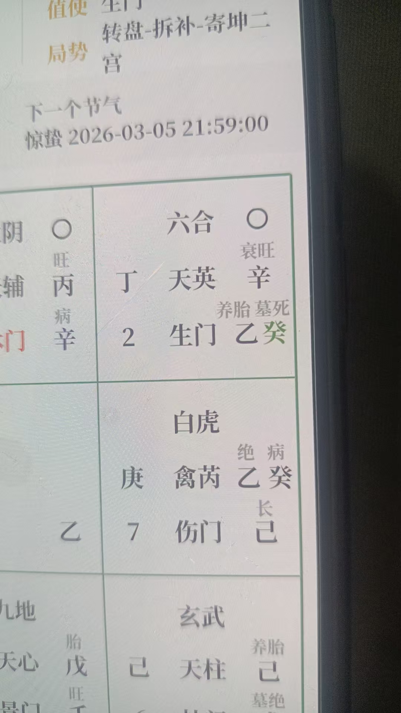
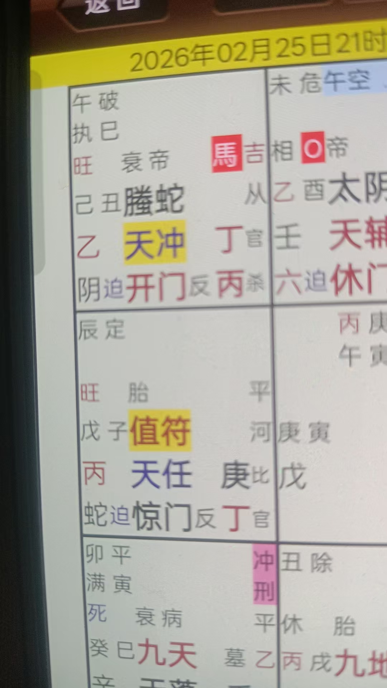
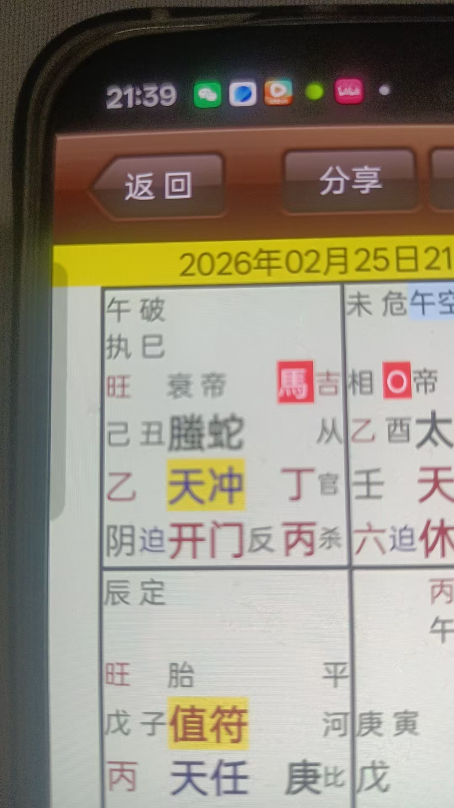
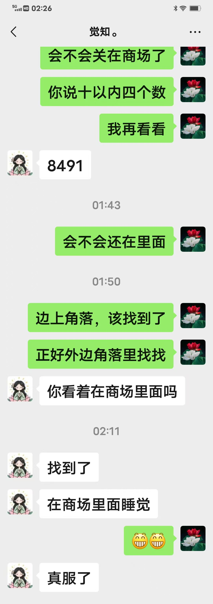
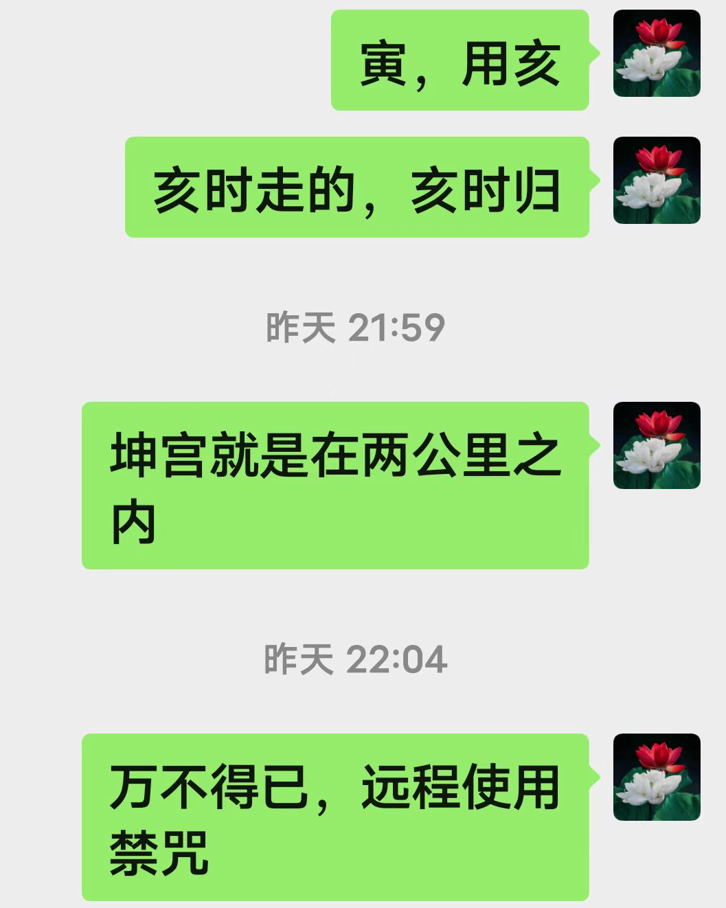
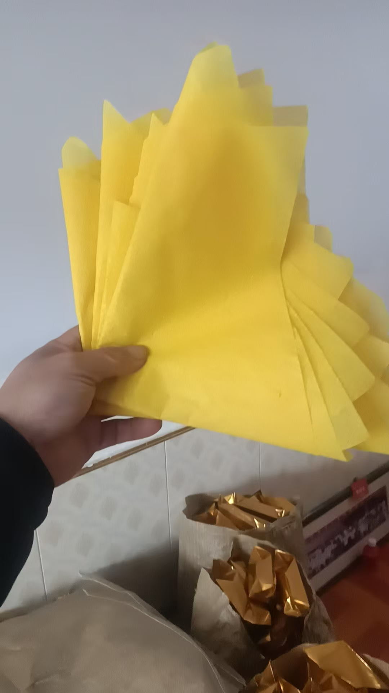

20260227禁咒是怎么使用的 禁咒+奇门遁甲找人
奇门遁甲修炼修行符咒术法 原始对话记录再说一下，禁咒是怎么使用的
说起来很简单
用遥视眼看到孩子
要清晰
再用六脉神剑的食指，在孩子周围画一个圈
食指就是肝气
画圈下指令，不要乱动
就这么简单
九转还丹练成六脉神剑
五指分别是肺肝脾心肾
作用就很明显了
肺，金含肃杀
什么六脉神剑？
肝为禁
脾，搬运
看来我少学不少啊[捂脸]
五指是十二经脉末梢
禁咒，就是肝能量 也需要分身 隔空远程使用 鸟不飞，鱼不游，人不行 文王画地为牢，哪吒出不来 不是听话，是真的出不来 现在常见的鬼打墙，就是这意思
返修
九转还丹，五行还丹就是在成人返修
你才多大[呲牙][呲牙]
我这快六十岁了，还在修超能力
神通必须具足
不是电话打不通
上海一孩子刚刚出走
在找孩子呢

出走方向是六合宫
西南方位
刚刚查监控就是去了门口西南方
被拐了?还是离家出走?
抑郁孩子，我不让家人给他报考，非不听
走了半个小时了

日干是找人的人
时干是孩子
都属木
丁，马星跑动
精神状态，腾蛇

不过是吉宫
没啥事
谁叫他们不听的，
先要命还是先上学
都几年不看书了，非要让他裸考
不考还好，考个零分，必定受打压，
本来就自杀
再打压一次，就死定了
师父，怎么看再打压一次就死定了？
是不是巽宫对面的乾宫不是很好？
六合宫是反吟，落空
反吟，合住就行
门反吟
寅，用亥
亥时走的，亥时归
坤宫就是在两公里之内
孩子找到了
禁术用早了
我说用禁术的时候是十点
商场关门，没出来
困在里面了
能看到在角落里睡觉
她姐找的时候，给我发视频，我说她超过孩子的活动范围了
这商场也就在两公里以内
然后，往宾馆走，离宾馆八百米左右，能看到孩子在这范围之外
找孩子的时候，我清晰的看到孩子在商场门口的路边
不过，那时候奇门盘时间点落空，孩子抵触情绪，故意躲着大人
会不会关在商场了
你说十以内四个数
8491
我再看看
会不会还在里面
边上角落，该找到了
找到了
你看着在商场里面吗
[呲牙][呲牙]
在商场里面睡觉
真服了

该找到了就是用了强大的意念力，必须在这时间出现

闵行区，不用禁咒，怕孩子跳河临晨一梦
六点多，做了个梦，梦见童子来讨要红包
一个红包里六十八块钱
要三五个
还要礼包，里面有糖果，糕点
这就明白了
昨晚找孩子，小童子出了力了
不要报酬，但要奖励
一会回老家，烧一些过去
上海这人的叔叔很懂行，
商场的保安查监控找到了孩子，给了保安二百，今天再送个锦旗过去，毕竟麻烦了人家
发过来八百，让我答谢神明
并且保证不再让孩子参加考试，先调理好身体
孩子姐姐问为什么不直接说在商场里，早找到孩子
我就按照我脑海里出的，做出了解答，
神仙师傅几次都说了，孩子几年不看书了，对学习非常抵触，非常敏感，一定不能提考试学习的话题
偏不听
一说之后，孩子就答应，你们说了算，然后就不说话了
为啥，犯病了
就出了这么档子事
孩子丢失之后，翻看了他的平板，不说话的那段时间，平板里全是怎么自杀死的快，跳楼会不会痛之类
你说家人是不是要吓死
神仙就说，不听，给以警示
好好好，全剧终
高梁饴
礼包
说到做到，鬼神诚不可欺
烧真的零食吗？
供零食

这个就是童子的红包
学费就是2.8W
学三到五天
学打坐，特别苦
[憨笑][憨笑][憨笑]
我在缅甸打坐四年，每天七个小时左右
也没学到啥
我这里三天就够了[憨笑][憨笑][憨笑]
@紫鸢真人 对徒弟没有门槛要求吗？
包教不包会
啥木头石头也能教啊
木头石头还行，对人要求特别严
[呲牙][呲牙]
那一年，收一个女孩
那是眨眼历三世，后化作佛祖座下石莲的莲花
这一世我来度她成就
因缘而来，
这样的就不能收学费
[憨笑][憨笑][憨笑]
古训，有缘不教，自遭天谴
为什么有的又收学费
也是因缘而来，不过正在世间历劫，
买走了你的劫数，节省了求学时间
三天抵得上时间十年二十年
江苏南通大师兄，跟南宁大师兄
自述求学半生，花费近百万，啥也不是
不是你们来不了，是身上业障阻碍，
必须在世间消业
南宁大师兄过来，求了介绍人一年，
结果我一看，还是来不了
身上黄煞太重，
又过了八个月，我再给他清理最后的因果业障，才过来了
你们的体内体外我看的一清二楚
来不了
大业障处理不了，过来我也教不了
并且还会干扰到我
我在群里发实战案例，就是展示超能力，实战使用
我会的你们都会
所以必须勤奋
禁咒，就是肝能量
也需要分身
隔空远程使用
鸟不飞，鱼不游，人不行
文王画地为牢，哪吒出不来
不是听话，是真的出不来
现在常见的鬼打墙，就是这意思
那孩子的叔叔去送锦旗
孩子姐姐问我，为什么要送锦旗，还给钱
我说，这是对人家的尊重
再说碰上好人了，如果平常保安，两点了谁给你开门放人进去找人，还查监控
不让找，孩子就等到第二天八点后开门，一晚上冻，饿，吓，会不会出其他问题
这孩子叔叔就是在上海搞近地飞行的
用一根食指，画一个圈
先说禁咒是怎么用的。
记录里说得很简单。用遥视眼看到目标，要清晰；再用六脉神剑的食指，在他周围画一个圈。食指就是肝气。一边画圈，一边下指令：不要乱动。
就这些。
再往回补一层，是六脉神剑。九转还丹练成之后，五根指头分别对应肺、肝、脾、心、肾。肺是金，含肃杀。肝为禁，禁咒用的就是肝的能量。脾管搬运。五指是十二经脉的末梢，所以作用很明显。
禁咒要用分身，隔空远程也能使。记录里配了几句现成的话——"鸟不飞，鱼不游，人不行"。又说，文王画地为牢，哪吒出不来，不是听话，是真的出不来。现在常说的鬼打墙，就是这个意思。
然后说那天的事。
上海一个孩子跑出了门，家人在找。是抑郁的孩子。记录里写，本不让他去报考，非不听。走了半个钟头。
排盘。日干是找人的人，时干是孩子，两个都属木。丁是马星，主跑动。精神状态看腾蛇。不过是吉宫，没啥事。记录里顺了一句气话：谁叫他们不听的，先要命还是先上学。
出走方向落在六合宫，西南方位。刚查了监控，人就是往门口西南去的。
有人问，是不是再打压一次就出事了。回答说，六合宫是反吟，落空。反吟，合住就行。门反吟。寅，用亥。亥时走的，亥时归。坤宫，就在两公里之内。
孩子找到了。
再说一遍，禁术用早了。用的时候是十点，商场关了门，人没出来，困在里面，在角落里睡觉。找的时候，记录里说，清清楚楚看到孩子在商场门口的路边上。只是那会儿盘上的时间点落空，孩子抵触，故意躲着大人。
第二天凌晨六点多，做了个梦。梦见童子来讨红包，一个红包里六十八块钱，要三五个，还要糖果、糕点。这就明白了。昨晚找孩子，小童子出了力。不要报酬，但要奖励，回老家烧一些过去。
最后是商场的保安查监控把孩子找到的。给了保安二百，再送一面锦旗。家里发过来八百，谢神明，并保证不再让孩子去考试，先把身体调好。
孩子姐姐问，为什么不直接说在商场里，早点找到。记录里说，就按照脑海里出的，做了回答：孩子几年不看书，对学习非常抵触，一定不能提考试的话题。偏不听。一提，孩子答应一声你们说了算，就不说话了。为什么，犯病了。丢的那天，翻了他的平板，里头全是"怎么自杀死得快""跳楼会不会痛"之类。
记录后面留了一行：闵行区，不用禁咒，怕孩子跳河。